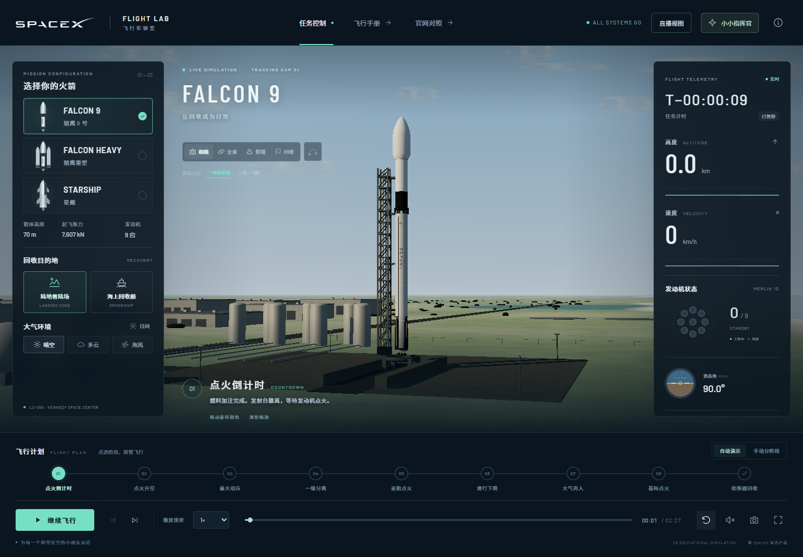
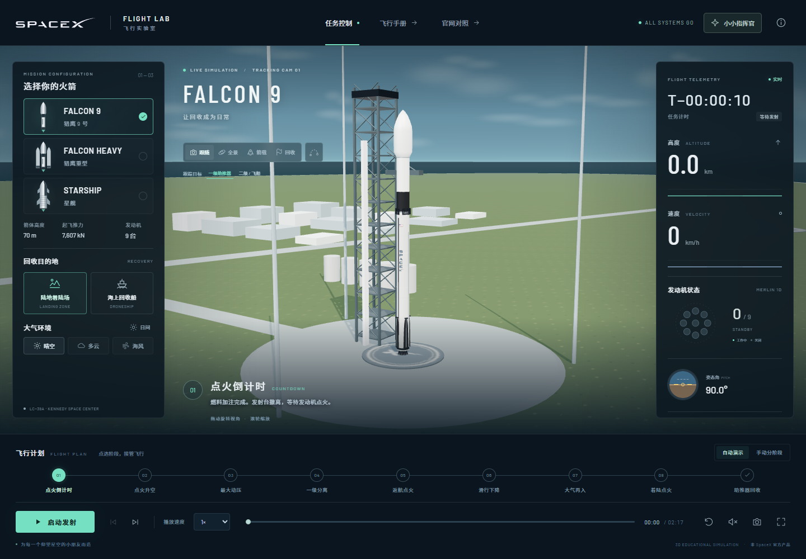
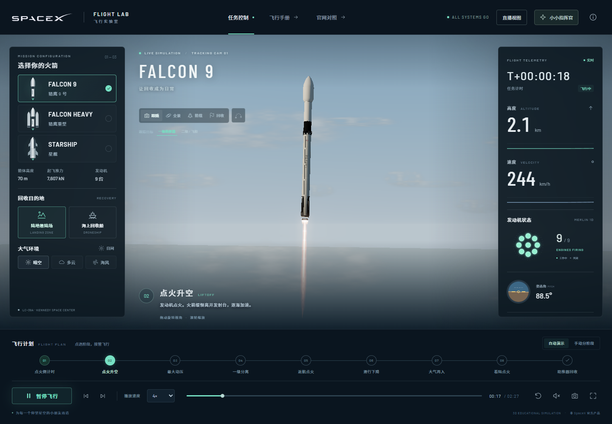
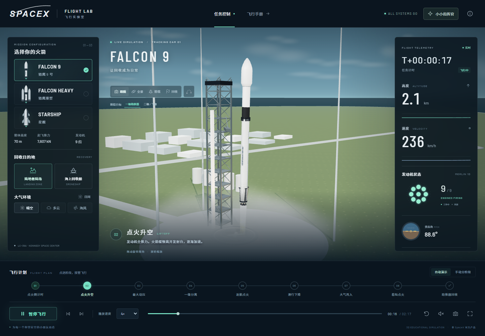
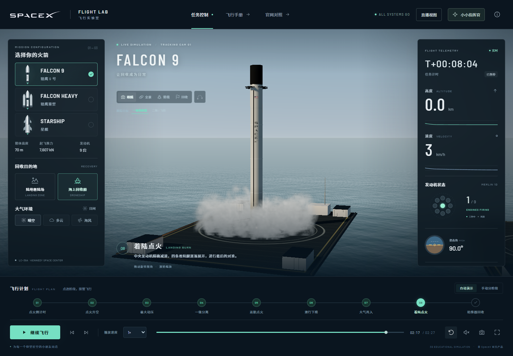
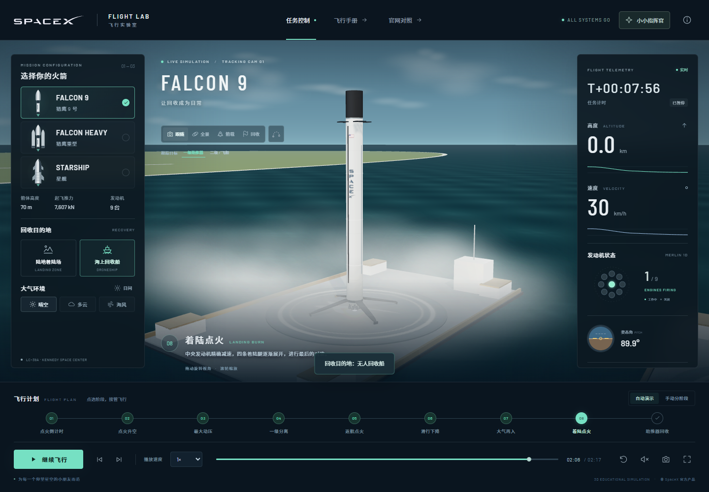
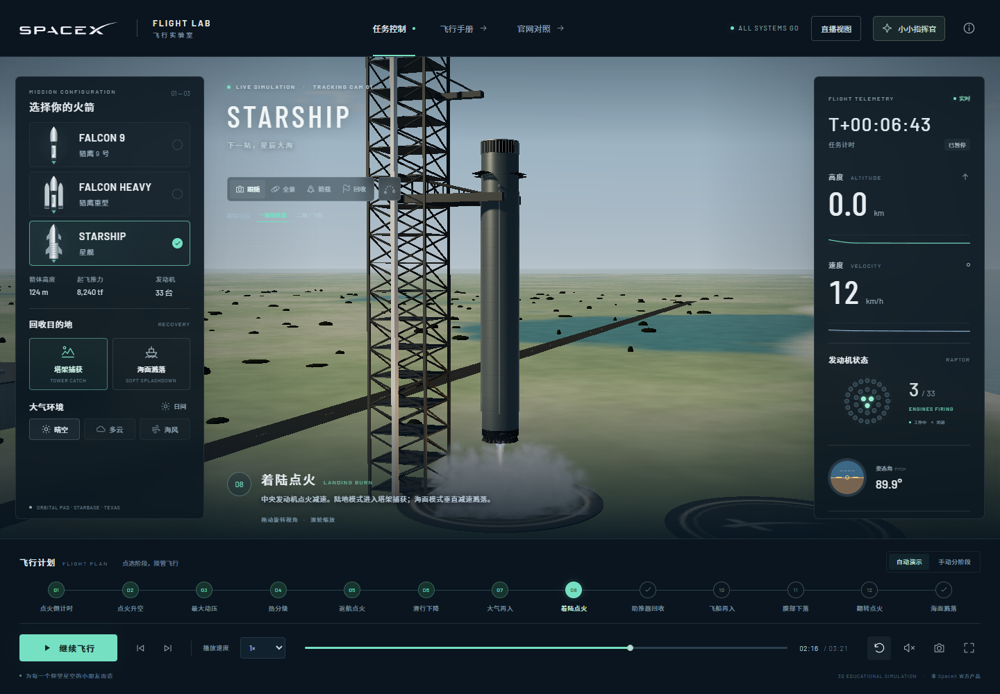
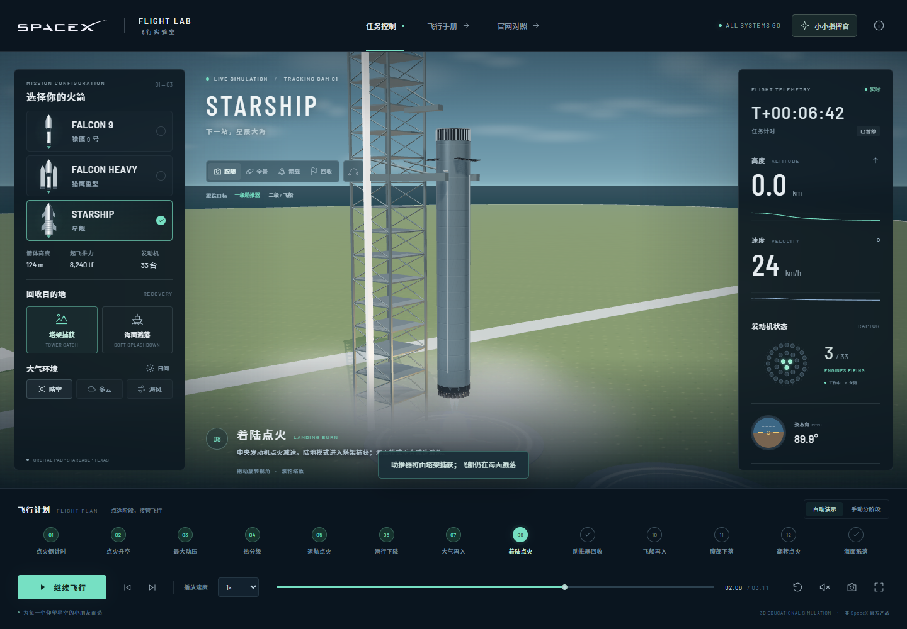
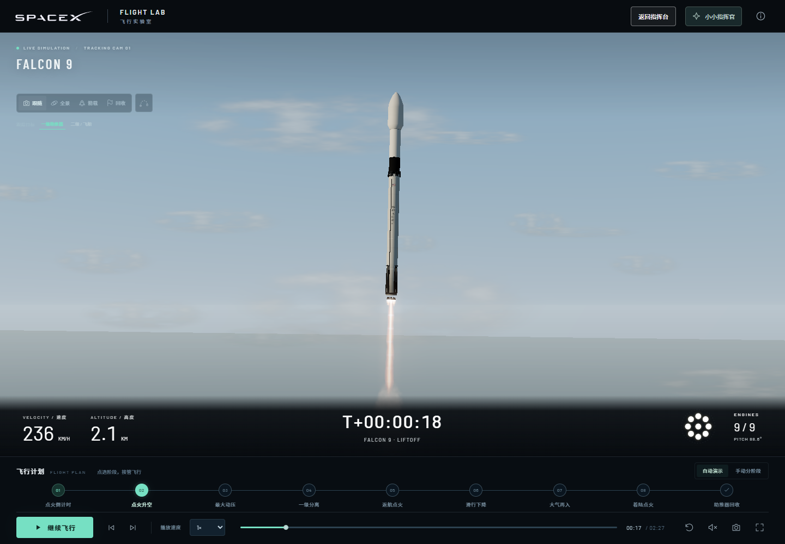

相似度评估火箭尺寸轮廓、可辨识结构和直播遥测布局有参考依据；环境质感与动画已明显改善。整体仍属于实时三维科普演示，未达到 SpaceX 实拍的照片级真实感。没有统一的同机位影像评测基准，因此不编造“还原度百分比”。
比较方式：移动滑块查看新旧画面，或打开完整图片。两版镜头、着陆时长和烟雾时刻已经调整，这里比较同类阶段的观感，并非像素对齐或同一任务时刻的实验。
01 / 发射台与自然光
收紧猎鹰强背结构，补充管路、储罐、道路和海岸纹理；调整阳光与阴影，减轻积木和塑料的感觉。


迭代前 · 1.1迭代后 · 1.202 / 升空与飞行尺度
重做流动尾焰，镜头持续跟随火箭。高度仪显示数公里时，火箭已经离开发射台；此前垂直尺度被压缩。


迭代前 · 1.1迭代后 · 1.203 / 回收船与着陆烟雾
回收船移至外海，甲板改为平面结构，加入水面反射和扩散烟雾，延长末段着陆过程。


迭代前 · 1.1迭代后 · 1.204 / 星舰塔架捕获
加强塔架与机械臂结构，调整不锈钢反光和捕获位置。地面设施仍是概括建模。


迭代前 · 1.1迭代后 · 1.205 / 更适合陪孩子看的直播视图
展开三维画面，把高度、速度、任务时间与发动机状态放在底部。发射、暂停、手动切换阶段仍然保留。

质量边界
- 模型按官网尺寸和照片制作，标识有官方来源；未使用官方 CAD。
- 轨迹、遥测和时序是代表性教学动画，未进行完整气动和制导计算。
- 高空地球是具有高度相关曲率的独立背景层，云层不是当天的真实气象。
- 无人船、发射台与塔架为概括模型，烟雾和再入辉光仍是程序化效果。